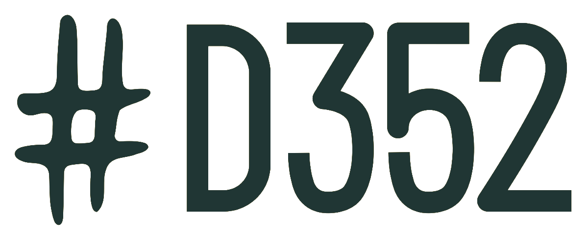
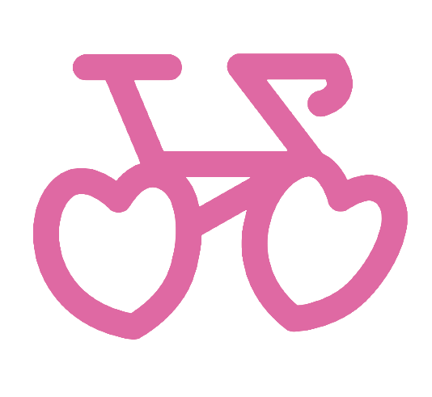

D
Start: 1. července 2026 · 17:00 Farčata · 352 obcí · Na Rekole




Projet 352 D-Obcí... na Rekole.
Jedno kolo, 352 míst.
Jedno léto, 90 dní.
Jedna duše, na dvou duších.
Jedna cesta, tisíce příběhů.
Jedna země, spousty krás.
Jeden život, kolik času?
Můžu dokud žiju.
Žiju dokud můžu.